The house, the man who designed it, the painter the street is named for, and the silent-film star whose statue stands across the road.
On May 9, 1916, the City of Los Angeles Department of Buildings issued permit No. 2846 for a "Double Dwelling" of ten rooms for two families on Lot 46 of the Glencoe Tract, at 6655 De Longpre Avenue and 1404 Cherokee Avenue. (The back unit's address is 1408 today.) The owner was Mrs. Sarah J. Higgins of 6633 Hollywood Boulevard, a few blocks north. On the architect's line, in ink, someone wrote: F. C. Hurst, Designer. The contractor's line just says "Builder," with the same phone number: Hurst designed the house and built it.
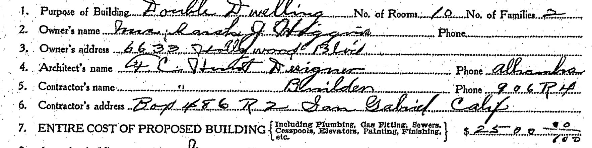
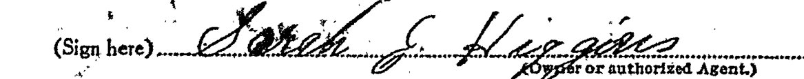
Two months later, on July 7, 1916, permit No. 4035 added a private garage, twelve by twenty feet, for $100, at the "South East corner of De Longpre & Cherokee Ave, Hollywood." The existing building is listed as a "Double Bungalow." This time the application is signed by Hurst himself.
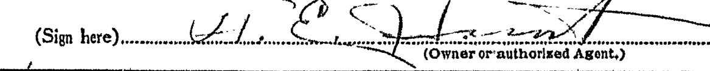
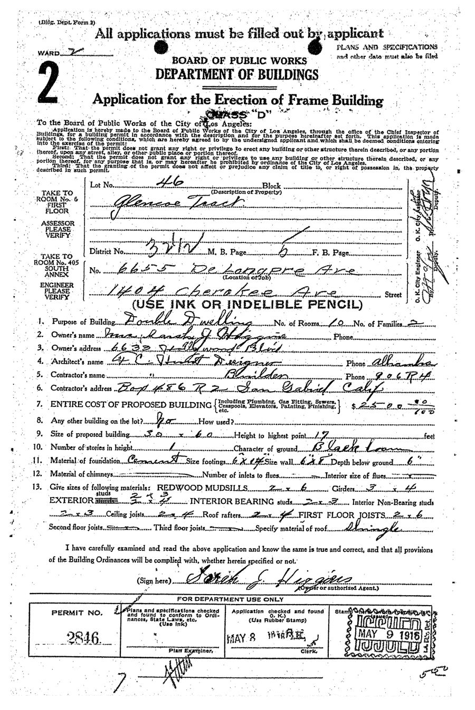
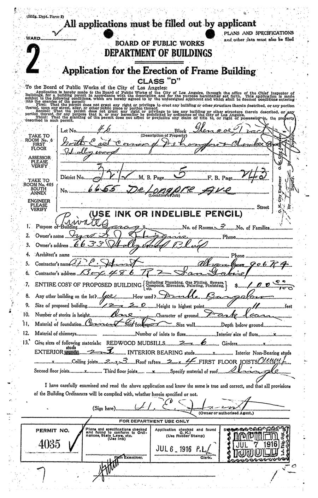
Hollywood had joined the City of Los Angeles only six years earlier, in 1910. Nestor had opened Hollywood's first film studio at Sunset and Gower in 1911, and in 1913 Cecil B. DeMille and Jesse Lasky rented a barn at Selma and Vine to shoot The Squaw Man. This house went up a few blocks from both, in the years the neighborhood was turning from orchards into the movie capital.
Frederick C. Hurst (1856–1923), a native of Winnipeg, came to Bisbee, Arizona, in 1902 as architect for the Copper Queen mining company. On January 1, 1906, he went out on his own, opening an office in the Muheim Block at the foot of Brewery Gulch, a building he most likely designed. Over that decade he shaped much of the town that still stands: the Copper Queen Hospital and the Bisbee Woman's Club (1902), the Pythian Castle (1904), Central School (1905), City Hall and the fire station with its bell tower (1906), the Copper Queen Library and Post Office (1906–07), and many of the Main Street buildings rebuilt after the fire of 1908. Some say his most beautiful was the Orpheum Theatre, a pie-shaped building at the mouth of Brewery Gulch; it was demolished in 1993, and the spot is now Goar Park.
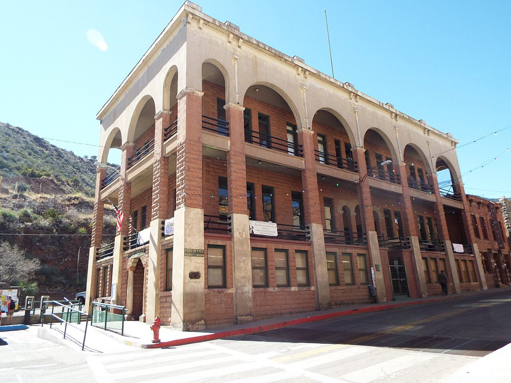
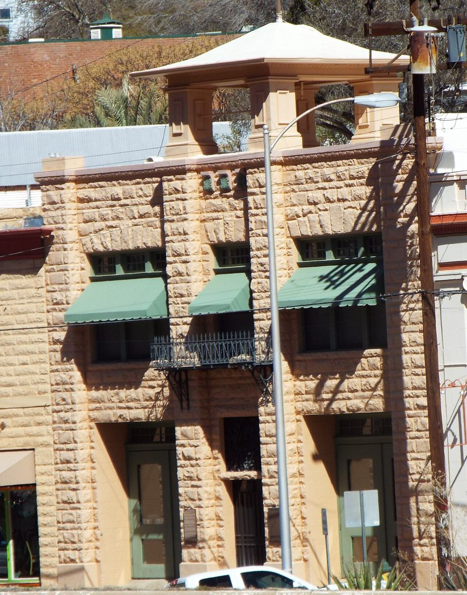
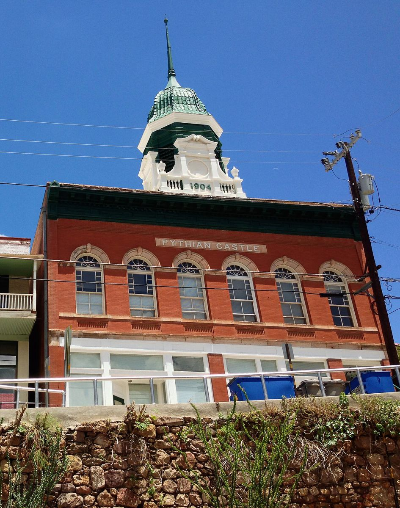
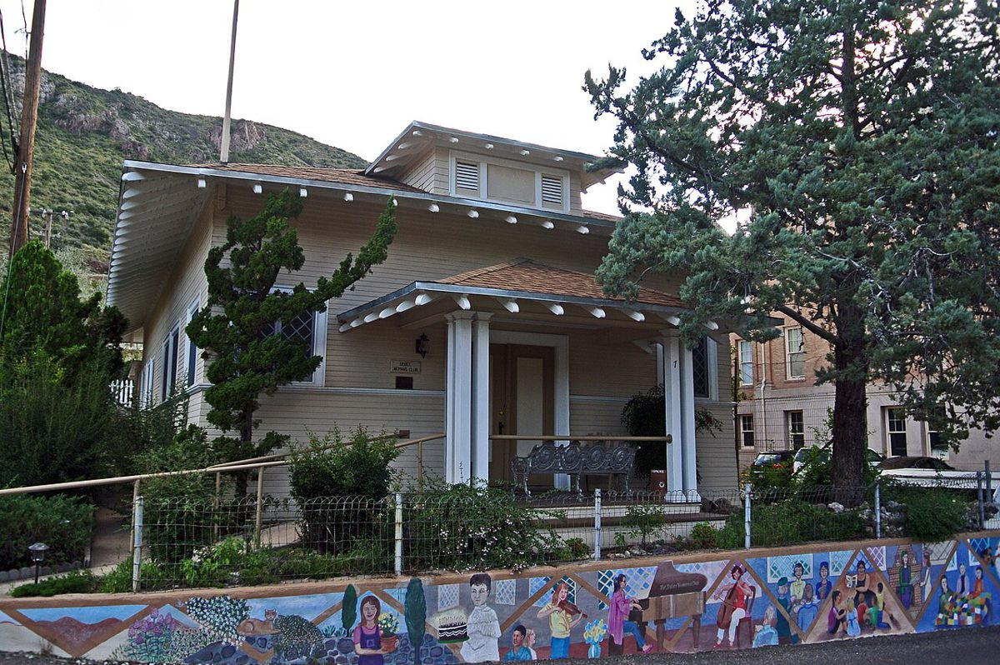
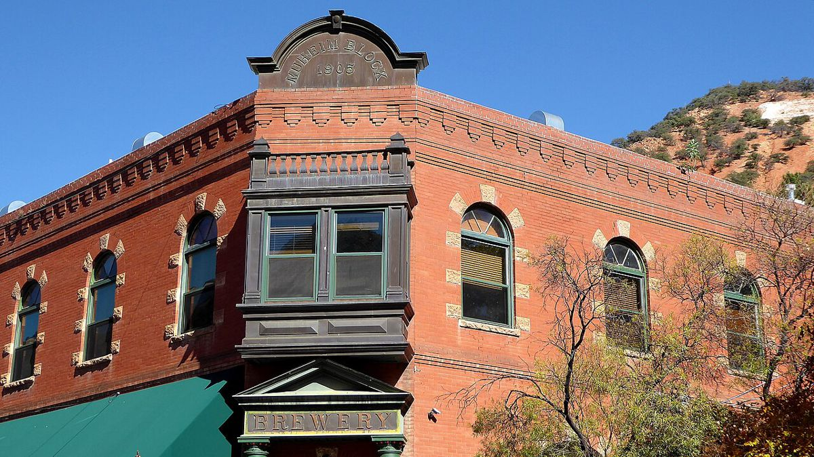
Swipe or scroll sideways for more of Hurst's Bisbee.
Hurst moved to Phoenix in 1911, joining the firm of L. D. Knipe (Tempe's City Hall and its First National Bank), and in 1922 became Phoenix's building inspector. In 1916, the permits show, he was also designing and building in Hollywood, from a San Gabriel address. He died in Phoenix in September 1923, struck by a car on First Street near Washington. This house is the only Los Angeles work of his we have been able to document.
Much of this comes from research the Bisbee Mining & Historical Museum generously did for us in 2014. As their researcher put it, Hurst and his contemporary Henry Trost "were apparently very humble men, and it is difficult to document who worked on many of the buildings."
Bisbee had another famous name: Thomas P. Higgins. Born in Boyle, County Roscommon, Ireland, in 1844, he arrived in Bisbee in 1877, dug his own tunnel into the hillside, and struck copper. He sold the Higgins mine around 1902, reportedly for $1 million, and put his fortune into Los Angeles real estate, building the Bisbee Hotel downtown and, in 1910, the Higgins Building at Second and Main, now a Los Angeles Historic-Cultural Monument.
He never married, and he had been cut off from his family for years. Once he was rich, the story goes, he hired a detective to find them. He brought his widowed sister and a small army of nieces and nephews to Los Angeles, at one point some 25 relatives living in his mansion on Magnolia Avenue, paid for their educations, and supported the ones who settled in California. He lies in the family mausoleum he built at Calvary Cemetery in East Los Angeles, said to have been the grandest of its day.
So: a Bisbee architect designs and builds a home in 1916 for a Mrs. Sarah J. Higgins. Was she one of Thomas Higgins's relatives, set up in a Hollywood double bungalow like the others he looked after? It's a lovely theory, and the Bisbee connection makes it plausible, but nothing ever connected them. Sarah's name is not on the mausoleum's plates, the Bisbee museum's files on the Higgins family don't include a Sarah, and Higgins is a common name. The answer turned up in the city directories.
One more clue sat on the permit itself: Sarah's address, 6633 Hollywood Boulevard. In 1912 a Mrs. Mabel Grady had a two-story brick building of stores and four apartments put up there, designed and built by Frank L. Meline, who would become one of Hollywood's biggest developers of the 1920s. And that is where Sarah turns up. The Los Angeles city directory for 1915 lists "Higgins, Sarah J., widow of A. I., bakery, 6633 Hollywood Blvd," and by 1916 the listing reads "restaurant." She lived in a rooming house on Whitley Avenue full of "photo players," then on McCadden Place.
Her husband, Alvin I. Higgins, was born in Indiana in 1861 and died in Los Angeles in 1909, leaving Sarah with a daughter, Josephine, born in Chicago in 1896. So the answer to the Higgins question is probably the plainer one: a different Higgins family altogether. Sarah seems to have been a widow who ran a bakery and then a restaurant on Hollywood Boulevard, saved her money, and in 1916 hired a Bisbee architect to build a double bungalow she could rent out. Not a copper king's poor relation, then, but something better: a widow making her own way in early Hollywood. Two small businesswomen, Mabel Grady and Sarah Higgins, on one block of the Boulevard. By family records, Sarah lived until 1960.
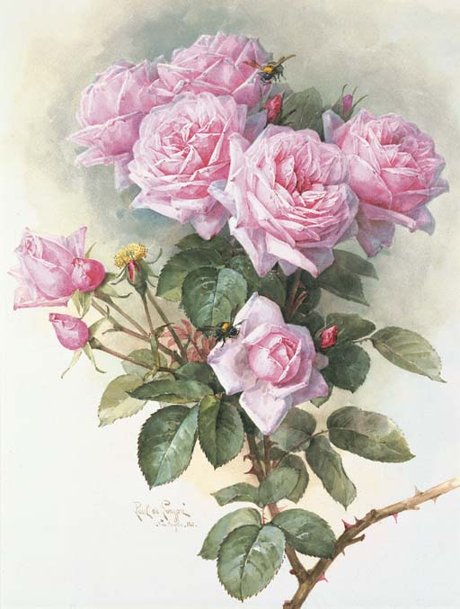
The street out front is named for Paul de Longpré (1855–1911), a French painter from near Lyon who became one of the most famous flower painters in America. He moved to Los Angeles in 1899, and Daeida Wilcox, one of the founders of Hollywood, traded him three lots on Cahuenga Avenue, just north of what is now Hollywood Boulevard, for three of his paintings.
There, in 1901, he built a Mission Revival mansion and surrounded it with some three acres of gardens full of the flowers he painted. He opened the gardens and his gallery to the public, and visitors came out on the "Balloon Route" trolley, up to 8,000 a month. It is often called Hollywood's first tourist attraction, a decade before the movies arrived.
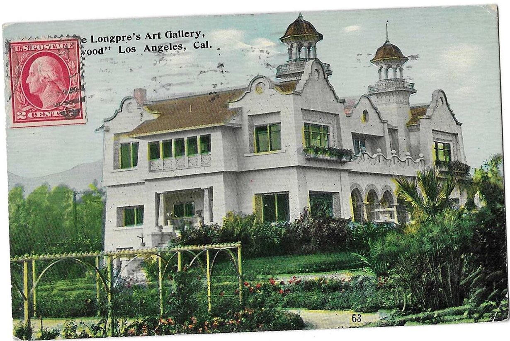
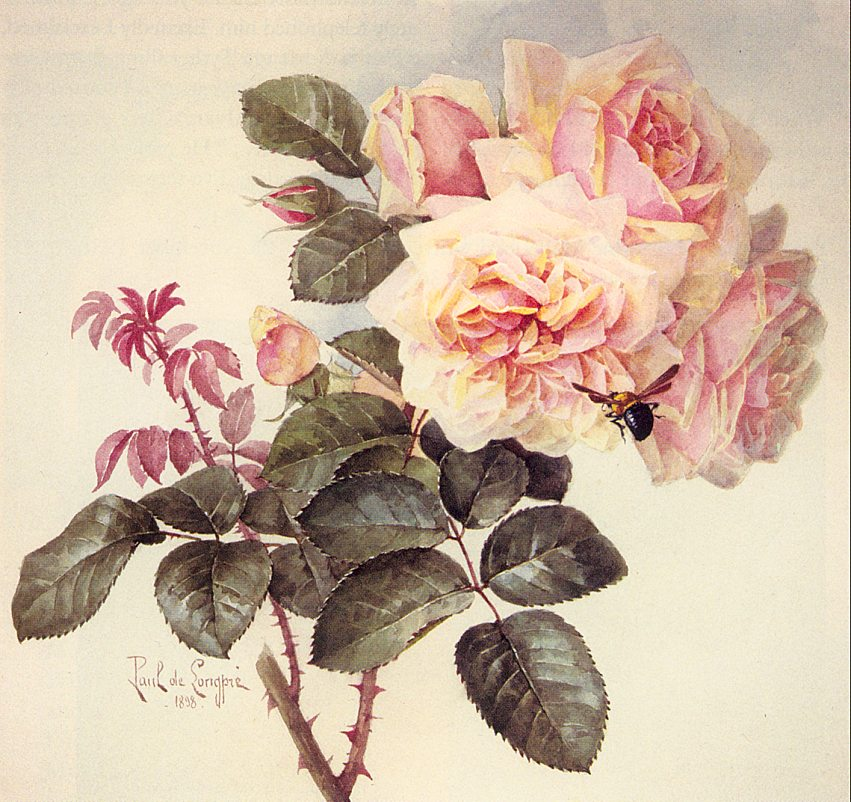
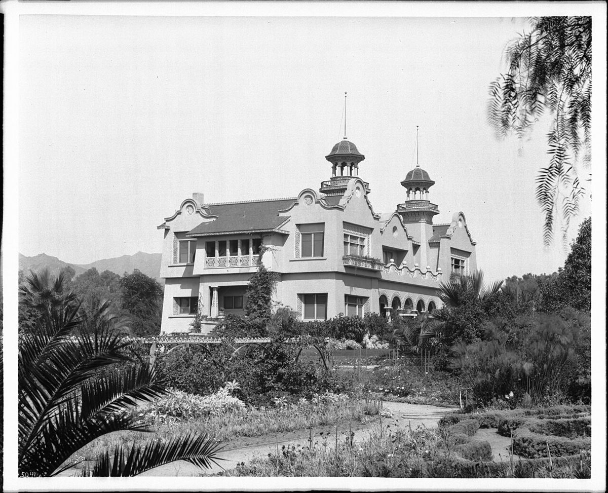
De Longpré died at home in 1911. The gardens were gone by 1924 and the house was torn down in 1927. What remains is the park and the avenue that carry his name, renamed from Wilson Avenue around 1912, and his roses and bees, which are still reproduced as prints today.
Directly across the street is De Longpre Park, 1.4 acres laid out in 1924. It holds two memorials to Rudolph Valentino, the silent-film idol who died in 1926 at 31.
The first, Aspiration, is a gold-leafed bronze of a nude young man gazing upward, standing on a black marble globe, by the sculptor Roger Noble Burnham. It was paid for by fans "from every walk of life, in all parts of the world," after the city council balked at putting up a monument itself, and the actress Dolores del Río unveiled it in May 1930, around what would have been Valentino's 35th birthday. It began as a fountain. In 1952 it was found knocked off its base on the lawn; the city took it away for repairs, and it did not come back for about twenty years.
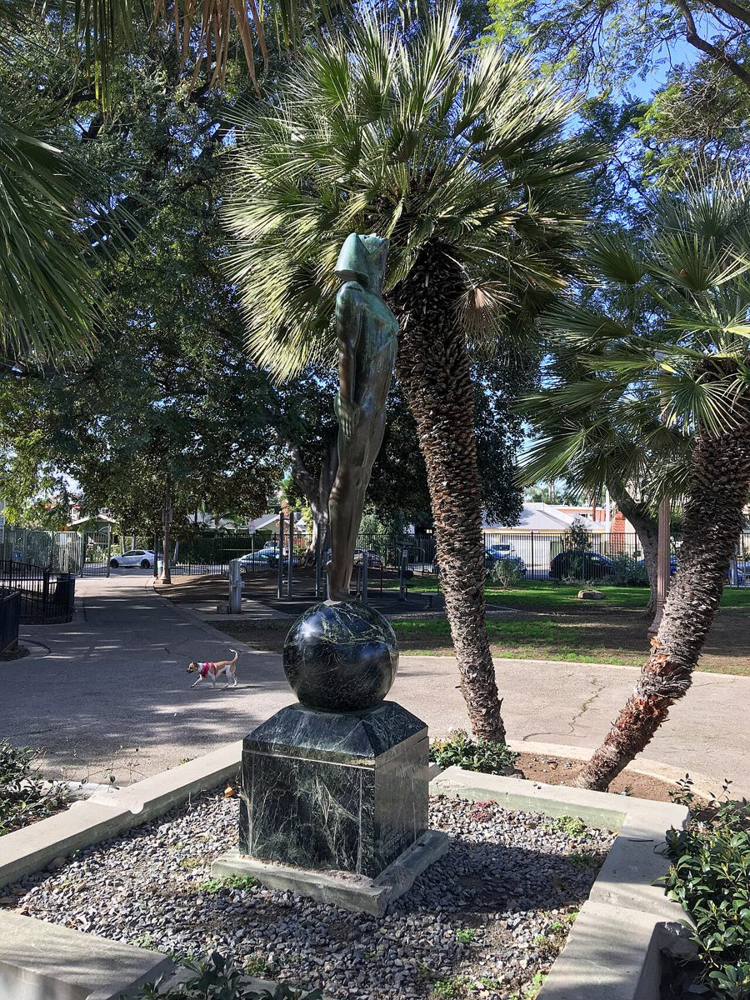
The second is a bronze bust of Valentino by Richard Ellis, set on a tall white pedestal nearby at the end of the 1970s and paid for from the estate of a devoted fan. The park was renovated in 2020 and has a playground and plenty of shade. It's a favorite with neighborhood dog owners, and with our guests.
Both halves of the 1916 duplex are furnished homes for stays of a month or more, each with its own private garden behind the hedge.
See the homesPlaces, people and buildings from this story, for anyone who wants to keep going.
Found something we got wrong, or know more about Sarah J. Higgins or F. C. Hurst? Email stay@hollywoodhideaways.com.


.jpg){kind=link}